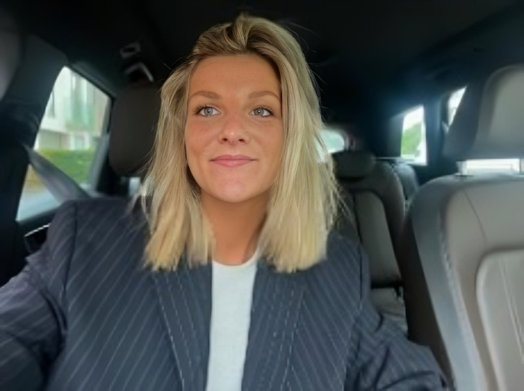

Verhuist je inboedel
Dozen, meubels en transport van deur tot deur. Dat is de praktische kant van de verhuis, maar niet de keuzes die eraan voorafgaan of de inrichting die erna komt.
WelkomThuis begeleidt het volledige traject wanneer je van een grote, vertrouwde woning naar een kleinere woning, appartement of serviceflat verhuist. Van bepalen wat meegaat tot het volledig inrichten van je nieuwe woning, zodat die opnieuw als een warme, vertrouwde thuis aanvoelt.
Een eerste telefoongesprek is gratis en vrijblijvend.
Je huidige woning
Je nieuwe woning
Bestaande meubels koppelen aan de nieuwe woning. Kies hieronder een meubelstuk om te zien waar het terechtkomt.
Waar een verhuisfirma vooral instaat voor het verhuizen van de inboedel en een interieurarchitect zich richt op de inrichting, brengen wij alles samen in één persoonlijk traject.
Dozen, meubels en transport van deur tot deur. Dat is de praktische kant van de verhuis, maar niet de keuzes die eraan voorafgaan of de inrichting die erna komt.
Een plan en een stijl voor de nieuwe ruimte. Maar wie bepaalt wat meegaat, wie vergelijkt de offertes en wie zet alles op zijn plek op de dag van de verhuis?
Van bepalen wat meegaat en wat een nieuwe bestemming krijgt, tot het inrichten van de nieuwe woning en ervoor zorgen dat die opnieuw als een warme, vertrouwde thuis aanvoelt.
Je hoeft niet zelf op zoek te gaan naar verschillende partijen of alles afzonderlijk te regelen: WelkomThuis neemt de coördinatie en begeleiding van het volledige traject op zich.
We zorgen ervoor dat de overgang naar de nieuwe woning niet alleen praktisch vlot verloopt, maar ook persoonlijk, overzichtelijk en met aandacht voor wat van de oude thuis behouden moet blijven.
Een verhuis is veel meer dan een praktische verandering. Daarom lopen we het volledige traject samen, van de eerste kennismaking tot de laatste accessoire.
Dit laatste is de kern van WelkomThuis.
Van een nieuwe woning opnieuw een vertrouwde, persoonlijke thuis maken. De kern van WelkomThuis
WelkomThuis is er voor iedereen die voor de uitdaging staat om van een grote, vertrouwde woning naar een kleinere woning, appartement of serviceflat te verhuizen.
Dat kan iemand zijn die zelf verhuist, maar evengoed een zoon, dochter, familielid of goede kennis die graag helpt, maar merkt dat het volledige traject moeilijk te overzien is.
We begeleiden zowel de persoon die verhuist als de mensen rondom hem of haar. Zo kunnen kinderen of familieleden betrokken blijven bij de belangrijke keuzes, zonder dat ze zelf het volledige traject moeten organiseren en opvolgen.
Een nieuwe thuis creëren doen we samen, op een manier die past bij de persoon, de woning én het budget.
Misschien is er simpelweg te veel om zelf te regelen.
WelkomThuis neemt die zorgen uit handen.
Elke verhuis en elke woning is anders. Daarom stemmen we onze begeleiding volledig af op jouw wensen, behoeften en budget. Van een praktische basisbegeleiding tot een volledig ontzorgd traject: jij bepaalt wat je nodig hebt, wij zorgen voor een oplossing op maat.
Benieuwd wat WelkomThuis voor jou kan betekenen? Aarzel dan niet om vrijblijvend contact op te nemen. Tijdens een eerste telefoongesprek luister ik naar jouw verhaal, beantwoord ik je vragen en bekijken we samen wat ik voor jou kan betekenen.

Ik ben Kato Vermeulen, de persoon achter WelkomThuis.
Vanuit mijn ervaring als maatschappelijk werker weet ik hoe belangrijk het is om mensen goed te begeleiden wanneer er grote veranderingen op hun pad komen. Daarnaast heb ik altijd een sterke passie gehad voor interieur, styling en mode.
Die combinatie van mensen begeleiden én oog hebben voor sfeer, stijl en persoonlijke details vormt de basis van WelkomThuis.
Het idee voor WelkomThuis ontstond vanuit een heel persoonlijke ervaring. Toen mijn grootmoeder de overstap maakte van haar vertrouwde, ouderlijke woning naar een kleinere woning, begeleidde en coördineerde ik zelf haar volledige verhuistraject.
Ik merkte van dichtbij dat zo’n verhuis veel meer is dan alleen een praktische verandering. Afscheid nemen van een vertrouwde woning kan emotioneel en ingrijpend zijn. Het is een hoofdstuk afsluiten en tegelijkertijd proberen om van een nieuwe plek opnieuw een thuis te maken.
Juist daarom vond ik het zo bijzonder om te zien hoe gelukkig mijn grootmoeder uiteindelijk was met haar nieuwe woning. Door vertrouwde meubels, persoonlijke spullen en herkenbare elementen mee te nemen, bleef een stukje van haar oude thuis behouden. In combinatie met enkele nieuwe, eigentijdse meubels en elementen ontstond er een mooi geheel: vertrouwd én nieuw tegelijk.
Die ervaring deed me beseffen hoeveel verschil een goede begeleiding kan maken. Niet alleen door te helpen met de praktische kant van een verhuis, maar ook door aandacht te hebben voor wat iemand wil behouden, waar iemand afscheid van wil nemen en hoe een nieuwe woning opnieuw als thuis kan voelen.
Vanuit die ervaring is WelkomThuis ontstaan: een persoonlijke service die het volledige traject begeleidt en ervoor zorgt dat een nieuwe woning niet alleen een nieuwe plek wordt, maar opnieuw een echte thuis.
Tijdens een eerste telefoongesprek luister ik naar jouw verhaal, beantwoord ik je vragen en bekijken we samen wat ik voor jou kan betekenen. Laat je gegevens achter, dan neem ik binnen twee werkdagen contact op.